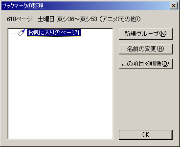
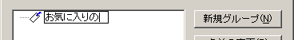
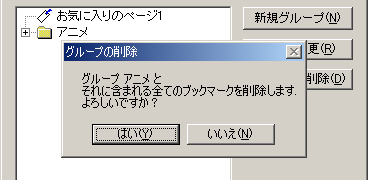
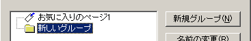
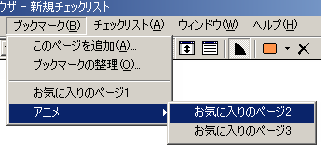
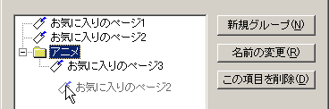

メインメニューの「ブックマーク」→「ブックマークの整理」で、ブックマーク管理用ダイアログボックスが表示されます。
このダイアログでは、ブックマークの名称変更・削除・グループ化（サブメニュー化）を行うことができます。
名前を変更したいブックマーク／グループを選択した状態で、もう一度そのブックマークをクリックするか、「名前の変更」ボタンを押すと名前を変更することができます。

半角127文字以内で指定してください。
削除したいブックマーク／グループを選択した状態で、「この項目を削除」ボタンを押すと、削除することができます。

ブックマークが含まれているグループを削除する場合、含まれているブックマークも全て削除されます。
この際、削除しても良いか確認するダイアログが表示されます。
グループ（フォルダのアイコンで表示されます）を作成し、ブックマークをグループ分けすることができます。

グループ化したブックマークは、ブックマークメニュー上でサブメニューの形で表示されます。

グループは、「新規グループ」ボタンで作成することができます。
ブックマークを選択して、グループ上にドラッグ＆ドロップすることで、ブックマークをグループに含めたり、他のグループに移動させたりすることができます。

なお、グループ内にグループを含めること（多重階層化）はできません。